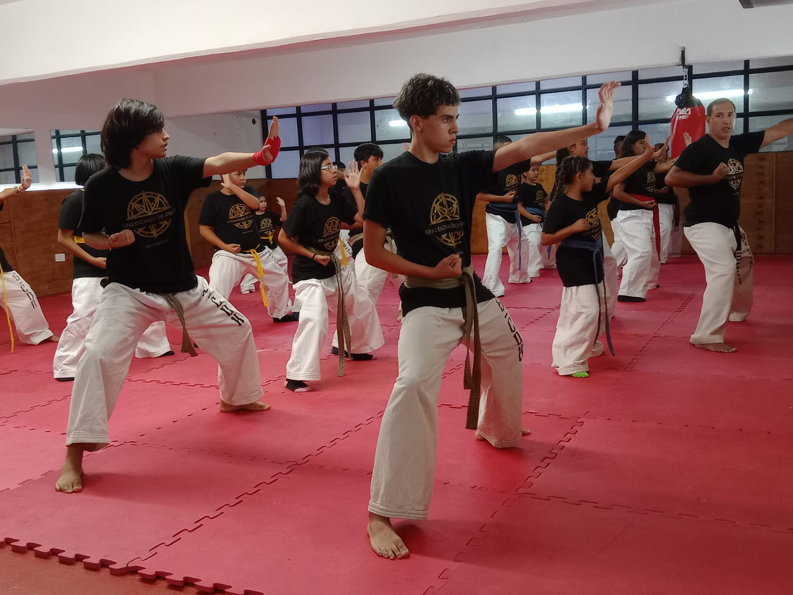
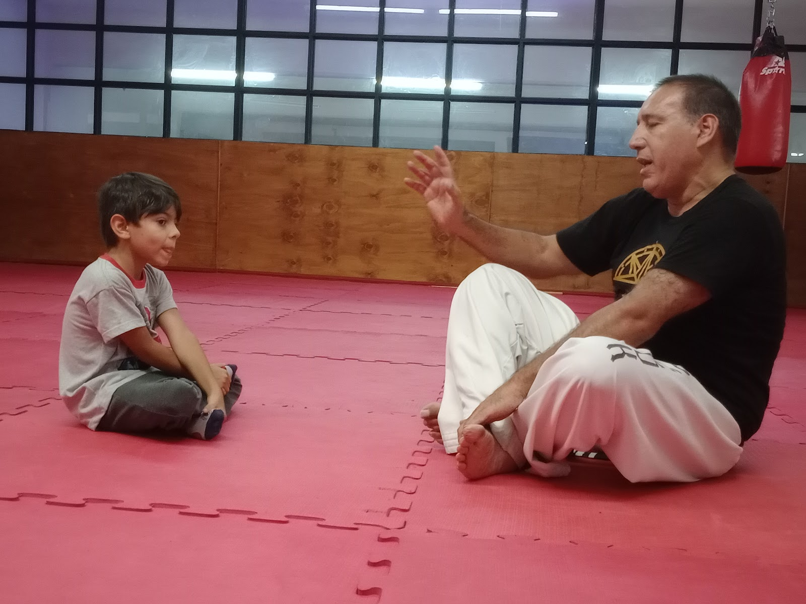
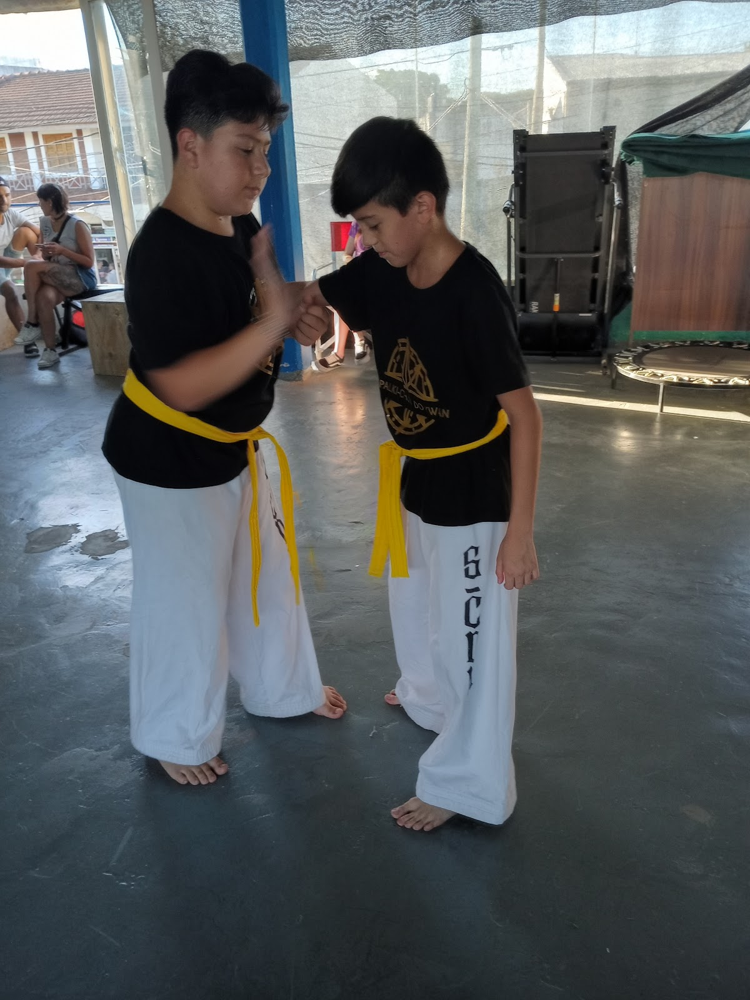
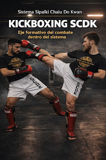
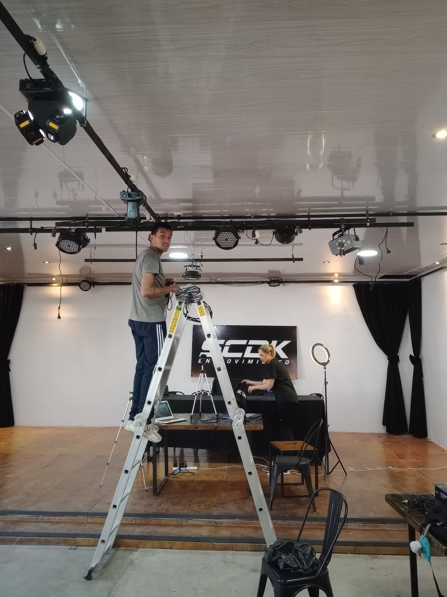

01Sipalki Chaiu Do Kwan
Técnicas de manos y piernas, defensa frente a agarres, lucha cuerpo a cuerpo, combate, formas y estudio progresivo de armas tradicionales: bastones cortos, bastón largo y machete.
PROGRAMA NACIONAL DE FORMACIÓN · ARGENTINA
Un sistema formativo nacional que integra técnica progresiva, Defensa Personal, Kickboxing SCDK y acompañamiento presencial y digital en todo el país. No ofrecemos consumo inmediato: ofrecemos recorrido, disciplina y comunidad.

EL SISTEMA FORMATIVO
Frente al sedentarismo, la sobreexposición digital y la dispersión, el entrenamiento marcial en Sipalki Chaiu Do Kwan (SCDK) propone movimiento real, mirada directa, ritual y pertenencia.
No es necesario tener experiencia previa ni llegar en determinada condición física. Cada practicante avanza dentro de un marco institucional claro, con criterios técnicos comunes, evaluaciones presenciales y conducción pedagógica responsable.
DIMENSIONES DE FORMACIÓN
Kickboxing, Defensa Personal, formación marcial integral y desarrollo comunitario articulados bajo una misma matriz pedagógica.

01Técnicas de manos y piernas, defensa frente a agarres, lucha cuerpo a cuerpo, combate, formas y estudio progresivo de armas tradicionales: bastones cortos, bastón largo y machete.

02No se trata de memorizar técnicas rígidas. Desarrollamos lectura de distancia, desplazamiento, reacción y control corporal para responder con responsabilidad, comenzando desde cero.

03Modelo pedagógico basado en evidencia con referencia WAKO en Light Contact, Full Contact y Low Kick. Progresión de contacto controlado y Torneos Formativos como puente hacia la competencia.

04Capacitación técnico-pedagógica territorial para futuros referentes locales junto a SCDK en Movimiento: entrevistas sobre cuerpo, palabra y territorio abiertas a la comunidad.
CURRICULUM OFICIAL
Cada nivel establece objetivos técnicos, contenidos concretos y formación de conducta. Seleccioná una etapa para ver su programa completo.
ACCESO EN TODO EL PAÍS
Los espacios presenciales y la Base Digital son puertas de entrada a una misma estructura, con programa técnico común y evaluaciones presenciales.
Para practicantes en zonas con sede activa. Clases regulares organizadas por grupo y nivel con seguimiento directo.
Para provincias o ciudades sin sede cercana. Combinación de plataforma digital, clases en vivo y encuentros presenciales periódicos de ajuste técnico.
Adquisición de la membresía de adhesión disponible en Mercado Libre.
Formulario con datos personales, ciudad y experiencia técnica previa.
Código de acceso según tu nivel, clases en vivo y material de estudio.
Instancias presenciales por zonas para corrección y práctica conjunta.
Validación presencial e indumentaria oficial del sistema desde Nivel 2.
SISTEMA EN MOVIMIENTO
Entrenamientos intersedes, Clínica Formativa de Kickboxing (Light y Full Contact), evaluación de mayo y Torneo Interno en Villa Devoto (Av. San Martín 7210).
Formación progresiva del Equipo de Competencia (Light Contact, Full Contact y Low Kick), puesta al aire del streaming y consolidación técnica intersedes.
Aula virtual asincrónica + instancia presencial y práctica supervisada con referencia reglamentaria WAKO y Certificación Técnica SCDK.
Instancia anual de evaluación técnica y reconocimiento del recorrido realizado dentro del Programa Nacional.
BIBLIOTECA DEL PROGRAMA
Explorá las 32 publicaciones extraídas del Programa Nacional: fundamentos pedagógicos, reglamentos de combate, niveles técnicos y guías de ingreso.
HORIZONTE INSTITUCIONAL
De la escuela cerrada al sistema formativo. De la sede aislada a la red articulada. SCDK convoca a practicantes, instructores y clubes que buscan método, criterio técnico y continuidad institucional.